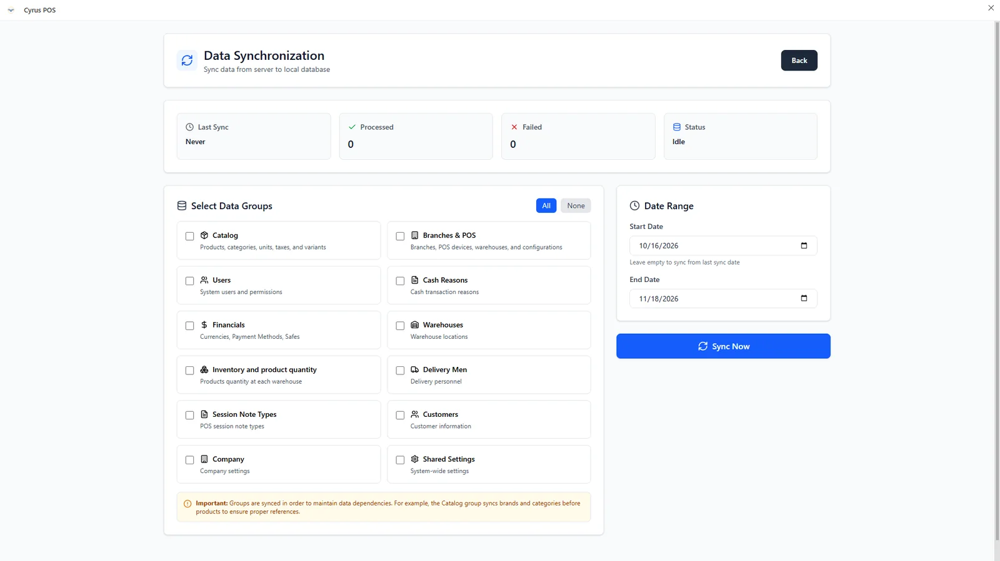

Offline-First Architecture & Data Synchronization
One of the main challenges was maintaining uninterrupted point-of-sale operations despite unreliable or completely unavailable internet connectivity.
The application needed to support local transactions independently while ensuring that all relevant data could eventually be synchronized with the central RMS platform without losing transaction history or violating business dependencies.
I designed a local-first architecture using SQL Server as the primary operational database for the desktop application.
The synchronization engine handled both outgoing transactions and incoming master data updates, with mechanisms for tracking synchronization states, processing failures, and recovering rejected records.
To maintain data consistency, synchronization followed dependency-based execution rules:
Session Synchronization
Closed cashier sessions were synchronized first.
Sales Order Synchronization
Sales orders and related transactions were synchronized only after their associated sessions were successfully registered in the cloud.
Returns & Voids
Dependent transactions were processed according to their original sales orders and synchronization status.
I also implemented a synchronization state machine to track the progress of each session and its associated transactions, preventing dependent records from being uploaded before their prerequisites were fulfilled.
The application supported multiple synchronization transport options, including REST APIs and RabbitMQ, allowing the communication mechanism to be configured based on the deployment environment.
